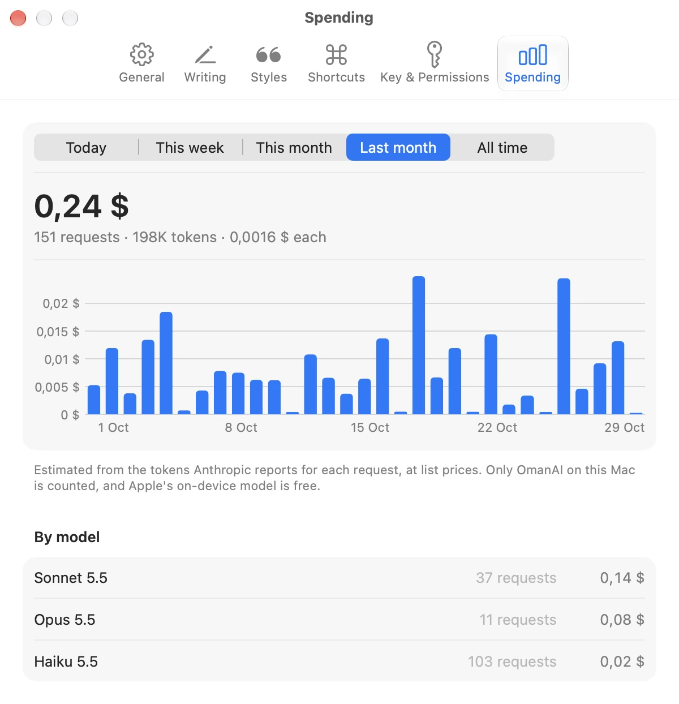
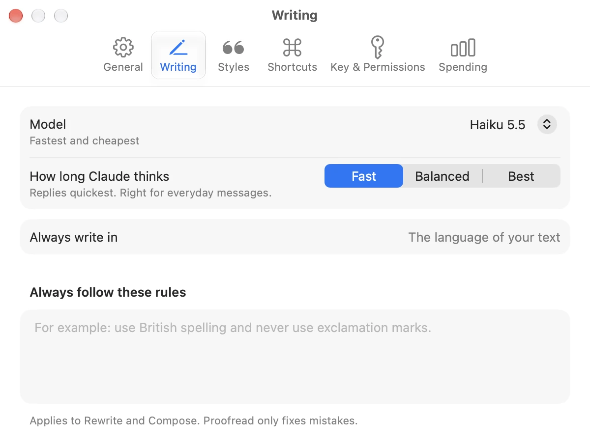

I hope this message finds you well! I wanted to reach out and let you know that I will promptly provide the Q3 numbers — I am simply taking a moment to meticulously verify the churn figure. Please don't hesitate to let me know if you need anything further!
Free and open source for macOS
Your words,
Your words,
in your own voice.
Select what you wrote in any app and click the wave in your menu bar. OmanAI proofreads or rewrites it in a style built from your own messages. One click puts it back.
macOS 14 or later · no account · MIT license
Works where you already write
- Slack
- Messages
- Telegram
- Notion
- Linear
- Gmail
- Notes
- Discord
- GitHub
- Teams
- Pages
Why it exists
Most AI writing sounds like AI. OmanAI learns from the messages you already sent, so a rewrite sounds like you on a good day. It lives in your menu bar, it never touches the field you are typing in, and nothing is pasted until you say so.
The difference
Anyone can tell when a machine wrote it.
Hi Dana, yes. I'll send the Q3 numbers over shortly, I just want to double-check the churn figure first.
Use cases
Four things you will use every day.
Recordings of the app itself. No sound.
Features
Everything fits in one small panel.
Teach it how you write
A style is a handful of messages you really sent. OmanAI picks up your length, your greetings, your punctuation and your emoji. Try one.
What you typedhey yes, ill send u the q3 numbers in a sec, just need to double check the churn figure first
Your own voice, tidied upyes! sending you the Q3 numbers in a sec, just double-checking the churn figure first
Learned from
- Nothing to learn. As written keeps the voice of the text itself.
It sees what you switch on
Three switches for context. Everything that is on is shown to you before it is sent.
- Your selected text
- The chosen style's messages
- A picture of the window
- Messages you pasted
- Your clipboard
Hear it as they will
Explain reads your text as its reader, before you press send.
Fine. Do whatever you think is best, I guess.
Alex will likely hear this as annoyed. "Fine" and "I guess" sound like you disagree but don't want to argue.
A shortcut for every action
Anywhere on your Mac, and one for each of your styles.
Pick the model that writes
Claude with your own API key, or Apple's model on your Mac for free.
| Model | First word | A message costs |
|---|---|---|
| Claude Haiku | 0.6 s | $0.0001 |
| Claude Sonnet | 0.7 s | $0.0015 |
| Claude Opus | 1.1 s | $0.0044 |
| Apple, on device | 0.8 s | Free |
Averages over 11 short writing tasks at the Fast setting, through the app's own client, on 12 November 2026. Proofread with Haiku takes about a second longer, because it checks before it writes. Yours will vary.
Know what it costs
Every Claude request is counted on your Mac: today, this week, this month, all time.
A panel that stays
Pin it and it becomes a small floating window you can drag anywhere.
Open source, MIT
No account, no analytics, no server of ours in between. Read every line.
Try it here
Press the buttons. This copy of the panel runs in your browser.
DanaMorning! I'm putting the board deck together today.
DanaDo you have the Q3 numbers?
hey yes, ill send u the q3 numbers in a sec, just need to double check the churn figure first
Chat
hey yes, ill send u the q3 numbers in a sec, just need to double check the churn figure first
Writing…
Scripted answers. Nothing you do here is sent anywhere.
How it works
You never leave the app you are writing in.
- 01
Select what you wrote
In Slack, Mail, Telegram, a browser tab, or almost anywhere else you type. A rough draft is enough.
- 02
Click the wave in the menu bar
Or press a shortcut you chose. The panel opens under the icon and shows your text and what you can do with it.
- 03
Choose a style and an action
As written keeps your own voice. A style rewrites it the way you write to a client, or to a friend. The result streams into the panel so you can read it first.
- 04
Replace
One click puts the result where your selection was, and the panel closes. ⌘Z in that app brings the original back.
A real Mac app
Native, down to the settings.





- 0.6s
- to the first word of a rewrite, with Claude Haiku
- $0.0001
- for a typical rewrite, at list prices
- 0
- accounts, analytics or servers of ours
- 1
- click to put the result back
Privacy
What leaves your Mac, and what never does.
Stays on your Mac
- Your styles and settings, in a local database
- Your API key, in the macOS Keychain
- Everything, when you use Apple's on-device model
Sent to Anthropic, with Claude
- The text you selected or asked for
- The messages in the style you chose
- Context you switched on, and nothing else
Never
- No analytics and no tracking
- No account with us, no server in between
- Nothing is pasted until you click
macOS asks for two permissions. Accessibility lets OmanAI read your selection and paste the result. Screen Recording is only needed if you include the screen, and the panel shows the picture before it is sent. Apart from your requests, OmanAI only contacts GitHub to check for updates. The code is open, so you can read exactly what it does.
Install
In your menu bar in a minute.
- Download the latest OmanAI zip.
- Move OmanAI to your Applications folder.
- Open it, click the wave and follow the setup.
- Mac
- macOS 14 or later
- Latest version
- On GitHub Releases
- For Claude
- An Anthropic API key
- On-device model
- macOS 26 with Apple Intelligence
- Updates
- Automatic and signed
- Price
- Free, MIT license
Free, open, and made in spare hours.
OmanAI has no price, no account and no ads. If it saves you time, you can help keep it going.
Donations open soon. Until then, a star on GitHub or a word to a friend helps more than you think.
Questions
Questions people ask.
Is it really free?
The app is free and open source. If you use Claude, you pay Anthropic directly for the requests you make with your own API key. Apple's on-device model costs nothing.
Which model should I pick?
Start with Claude Haiku: it is as fast as the on-device model, it matches a style well, and a message costs a hundredth or two of a cent. Choose Sonnet or Opus when the wording matters more. Apple's on-device model is free and private, and works best for plain proofreading in English.
Does it work in every app?
In most of them. OmanAI reads your selection through macOS Accessibility, or with a quick copy where an app doesn't expose it, as Slack and other Electron apps don't. Terminals, remote desktops and virtual machines are the exceptions, and the documentation says how each behaves.
Will it change my text without asking?
No. The result appears in the panel first. Nothing is pasted until you press Replace or Insert, and if your selection changed in the meantime, OmanAI pastes nothing and tells you.
Does it work in other languages?
With Claude, yes. It keeps the language of your text unless you ask for another one, and you can set a language it always writes in. Apple's on-device model covers the languages Apple Intelligence supports.
What happens to my clipboard?
Pasting borrows the clipboard for a moment and then puts back what was there. The pasted text is marked as passing through, so clipboard history apps can leave it out.
How do updates work?
OmanAI checks this project's GitHub releases once a day and installs a new version when you quit. Every update is signed, and the app checks the signature before installing. You can turn automatic updates off in Settings.
Who makes it?
OmanAI is an independent open-source project. It is not made by, or affiliated with, Anthropic or Apple.